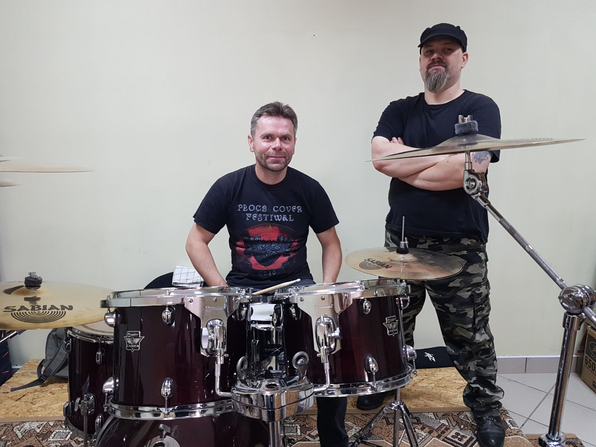
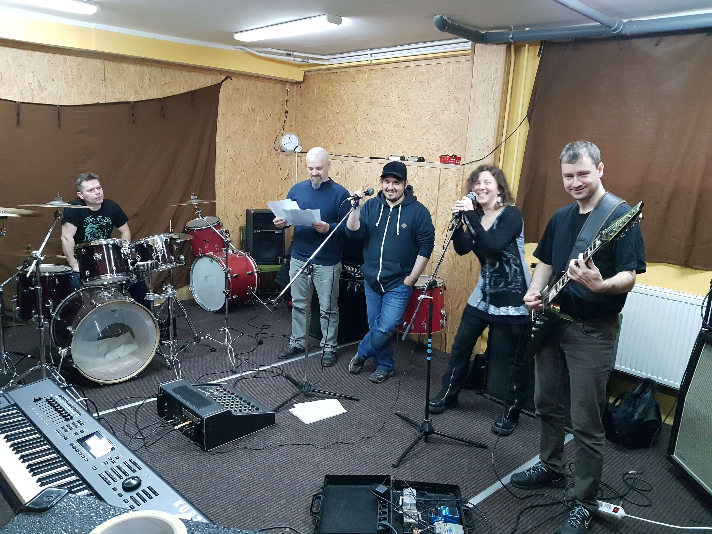

Marcin
Gitarzysta, założyciel i lider zespołu. Jego grę cechują wyraziste riffy oraz liczne harmoniczne wstawki. Inspiruje się takimi gitarzystami jak Ritchie Blackmore (ex-Deep Purple), Arjen Lucassen (Ayreon), czy Morten Veland (Sirenia, Mortemia, ex-Tristania)
Anna
Wokalistka i dusza zespołu, która dba o zaangażowanie pozostałych muzyków. Posiada klasyczne wykształcenie muzyczne. Inspiruje się Tarją Turunen (kariera solowa, ex-Nightwish), Dianne van Giersbergen (Ex Libris, ex-Xandria) oraz Floor Jansen (Nightwish, ex-After Forever).
Krzysztof
Perkusista, który swoim energicznym stylem gry napędza każdy z utworów. Wśród jego inspiracji należy wymienić takie kapele, jak Metallica, Pantera, Dream Theater, od których zaczęła się jego przygoda z bębnami.
Adam
Basista grupy, który kładzie basowe tło pod utwory, ale też stanowi istotne zaplecze techniczne zespołu. Człowiek orkiestra - gra nie tylko na basie, ale też na gitarze elektrycznej i perkusji. Inspiruje się Jimmym Hendrixem, Black Sabbath, Burzum.
Leszek
Klawiszowiec, który jako jedyny z instrumentalistów grupy może cieszyć się dyplomem ukończenia szkoły muzycznej. Wielki fan muzyki klasycznej i progresywnego rocka. Jego ulubionymi zespołami są Genesis, Pink Floyd i Yes.
Arek
Gra na irlandzkich i szkockich instrumentach typu whistle, które pojawiają się w niektórych naszych utworach. Gra także na dudach. Inspiracje czerpie z zespołów takich jak Nightwish, Eluveitie czy Wolfstone.
Imaginature to zespół wywodzący się z północno-wschodniej Polski (Szczytno, Malbork i Toruń). Jego historia sięga roku 2015, kiedy to 24 marca w olsztyńskim klubie Revoler Rock Cafe Marcin (gitarzysta), Łukasz (ówczesny wokalista) oraz Bartek (ówczesny basista) wspólnie postanowili założyć zespół. Niedługo potem do Imaginature dołączyli Krzysiek (perkusja) oraz Arek (irlandzkie instrumenty folkowe). Następnie skład bandu uzupełnili Anka (wokal) i Leszek (klawiszowiec). Po tym, gdy zespół opuścił Bartek, jego miejsce zajął Adam (bas). W takim składzie Imaginature występuje do dziś.
Muzyka Imaginature wpisuje się w gatunek metalu symfonicznego. Charakterystyczne są dla niej wyraziste gitarowe riffy, mocno zaznaczona sekcja rytmiczna, melodyjne klawisze/whistle, oraz wokale tworzące syntezę śpiewu rozrywkowego oraz klasycznego.
Nazwę zespołu wymyślił Marcin. Ma oddawać kontrast pomiędzy logicznym umysłem ludzkim a naturą, która jest zmienna i zarazem nieprzewidywalna w swoich działaniach.
Obecnie zespół pracuje na swoim debiutanckim albumem, który ma się ukazać na przełomie roku 2019/2020.